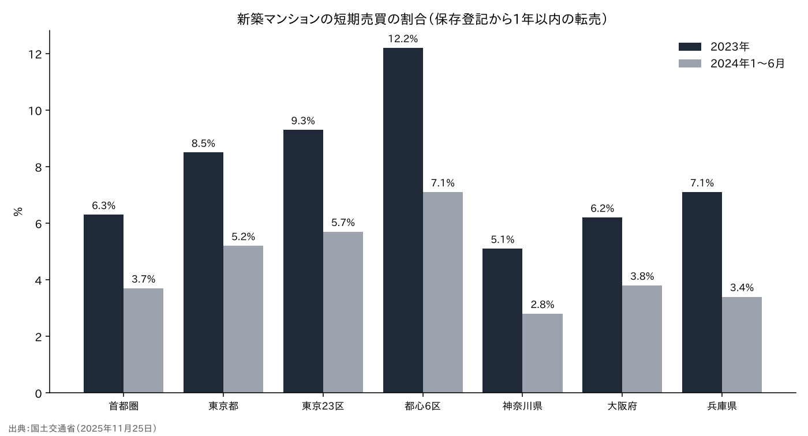
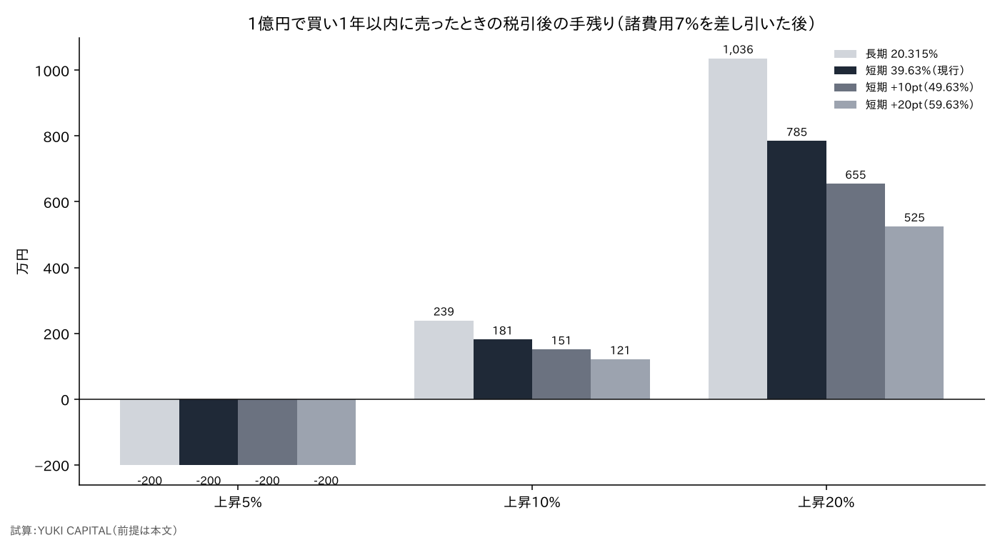
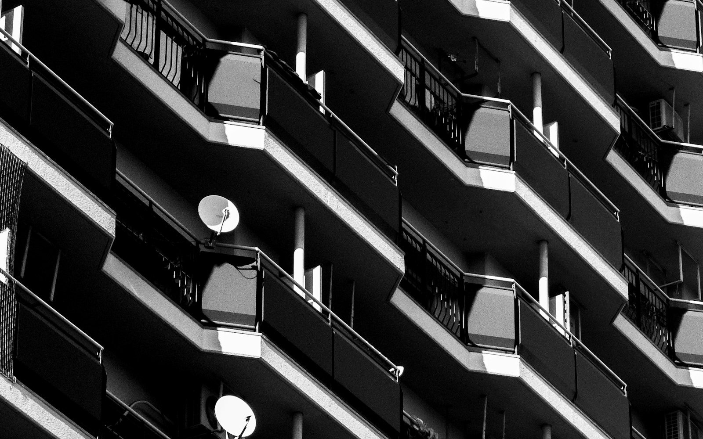

マンションの短期転売に重い税をかけると、価格と買取再販はどう変わるのか――国交省の登記データと税率の試算で考える
都心の新築マンションを買い、1年もたたずに売る取引が、東京を中心に増えてきた。国土交通省の調べでは、2023年に都心6区で保存登記から1年以内に転売された住戸は12.2%にのぼる[1]。
国は2027年度の税制改正で、こうした投機的な取引を抑える措置を要望し、与党の大綱にも新築マンションの短期売買への税制上の措置を講じると書かれた[2][3]。
本稿の問いは、短期の転売に重い税をかけたとき、転売の採算・価格・買取再販の業者にどこまで効くのかである。
- 現行でも、5年以内に売った個人の譲渡益には39.63%がかかる。1億円の部屋を10%高く売っても、諸費用7%を引いた税引後の手残りは約181万円にとどまる[4]。
- 税率を10〜20ポイント上げると、手残りは151万〜121万円まで減る。値上がりが7%（諸費用分）を下回れば、税率に関係なく損になる。
- 買取再販の業者は、事業の利益として課税されるため、個人の譲渡所得の税率を上げても直接は効かない。業者に効くのは、不動産取得税と登録免許税の軽減措置（2027年3月末まで）をどう扱うかである[5][6]。

問いと背景
本稿でいう「短期売買」とは、新築マンションの保存登記（新しい建物の所有者を初めて登記すること）から1年以内に、別の人へ所有権が移ることを指す。国土交通省は、法務省から受け取った登記の情報と民間の価格データを使い、三大都市圏と地方4市の新築マンション約55万戸を調べた[1]。
「買取再販」とは、宅地建物取引業者が中古住宅を買い取り、改修してから個人に売る事業である。業者が買い取るときの不動産取得税と、買った個人の登録免許税には、一定の改修を条件に軽くする特例がある[5][6]。
「譲渡所得」とは、土地や建物を売って得た利益のうち、買ったときの値段と売るためにかかった費用を差し引いた部分を指す。個人が自宅以外の部屋を売った場合、この譲渡所得に対して、他の所得とは分けて税金がかかる。本稿で「税率」というのは、この分けて計算する税の率のことである。
この問いが今重要なのは、税の議論が具体化し始めたからだ。国交省は2027年度の税制改正要望に「新築マンションの価格高騰への対応に係る所要の措置」を入れ、実需に基づかない投機的取引を抑える方策を検討するとした[2]。共同通信は、短期の売買への税負担を重くすることが想定されると報じている[7]。
ただし、今の制度にもすでに短期と長期の差はある。だから問うべきなのは「税をかけるか」ではなく、「今より何ポイント重くすれば、どの取引が止まるのか」である。本稿はこの差を数字で確かめる。
データと方法
使った数字は、国交省の調査の短期売買の割合（地域別・年別・規模別）[1]と、国税庁が示す個人の譲渡所得の税率である[4]。現行では、売った年の1月1日時点で所有期間が5年以下なら短期譲渡所得として所得税・復興特別所得税・住民税の合計39.63%、5年を超えれば長期として20.315%がかかる。
ここで注意したいのは、所有期間の数え方だ。期間は「売った年の1月1日時点」で数えるため、2026年3月に買った部屋が長期の税率になるのは、2032年に入ってから売った場合になる。実際には5年10か月ほど持つ必要があり、短期の税率がかかる期間は思われているより長い。
転売の採算は、1億円の部屋を1年以内に売る場合で試算した。式は「税引後の手残り＝（売値−買値−諸費用）×（1−税率）」である。諸費用は仲介手数料・登記・ローンの手数料などをまとめて買値の7%と置いた。値上がりは5%・10%・20%の3通り、税率は現行の39.63%に加え、10ポイント上げた49.63%と20ポイント上げた59.63%を仮に置いた。
比較のために、5年を超えて持った場合の長期の税率20.315%も並べた。税率の上げ幅は、今のところ政府が数字を示していないため、仮の値である。
結果

短期売買の割合は、2023年が高く、2024年1〜6月は下がった。2024年の数字は半年分であり、年の後半に戻った可能性もある点には注意がいる。東京23区は2023年の9.3%から5.7%へ、都心6区は12.2%から7.1%へ下がっている[1]。2018〜2022年の最大値は都心6区で4.6%だったので、2023年の跳ね上がりの大きさが分かる。
規模でも差が出た。東京23区の40平方メートル以上の住戸で、2024年上期の短期売買の割合は、1棟で100件以上の登記がある大規模マンションで9.9%、それ以外で3.3%だった[1]。転売は、大きな物件に偏っている。
国外に住む人の取得は、都心6区で2024年に7.5%、2025年1〜6月に3.2%だった[1]。全体の数字の中では、国外からの買いは主役ではない。
地域で比べると、2018〜2022年の最大値に対して2023年の割合が大きく伸びたのは都心6区（4.6%→12.2%）と兵庫県（4.1%→7.1%）である[1]。都心ほど、大規模なほど転売が多いという形は、値上がりの大きい場所に転売が集まるという見方と合う。
感度分析

| 値上がり | 長期 20.315% | 短期 39.63%（現行） | 短期 49.63% | 短期 59.63% |
|---|---|---|---|---|
| 5% | −200万円 | −200万円 | −200万円 | −200万円 |
| 10% | 239万円 | 181万円 | 151万円 | 121万円 |
| 20% | 1,036万円 | 785万円 | 655万円 | 525万円 |
値上がりが10%なら、現行の税率でも手残りは約181万円で、元手1億円に対して1.8%ほどにすぎない。税率を20ポイント上げると121万円まで減る。値上がりが20%と大きいときに、税率の差は金額として大きく効く（785万円から525万円へ）。
一方、値上がりが諸費用の7%に届かなければ、どの税率でも損になる。言い換えると、短期の転売を支えてきたのは税率の低さではなく、1年で10%を超えて上がる値動きそのものだったことになる。
もう1つ見ておきたいのは、短期と長期の差である。値上がり20%なら、現行の短期39.63%と長期20.315%の差だけで手残りは251万円違う。税率を20ポイント上げれば、この差は511万円に広がる。持ち続けて長期の税率を待つ動機は強まるが、それは売り物件が出にくくなることでもある。
前提を変えると結果も動く。諸費用を5%に下げれば手残りは増え、ローンの金利を含めて10%と置けば、値上がり10%の場合はどの税率でもほぼ手残りが出ない。ここでの数字は、前提を明示した1つの試算として読んでほしい。

考察
第1に、税の強化は「大きく上がる局面」の転売を細らせる。値上がりが小さい局面では、今の税率でもすでに採算が薄いからだ。国交省の調査で2024年に割合が下がったのは、金利の上昇と値上がりの鈍化が先に効いた可能性がある。
第2に、買取再販の業者には、個人の譲渡所得の税率の引き上げは直接は効かない。業者は仕入れた住宅を商品として売り、その利益は事業の所得として法人税などで課税されるからだ。業者に効くのは、不動産取得税と登録免許税の特例が2027年3月末の期限のあとに延長されるかどうかである[5][6]。
反対の見方もある。短期の転売に税をかけても、新築の供給が増えなければ価格は下がらない、という見方だ。千代田区が不動産協会に求めた、引き渡しから5年間の転売を禁じる特約のように、税ではなく契約で抑える方法もある[8]。
第3に、法人の扱いが抜け道になりうる。法人が持つ不動産を売った利益は、保有の期間にかかわらず法人の所得として課税されるため、個人の短期の税率だけを上げると、転売の器が個人から法人へ移る可能性がある。大綱の書き方で、法人を対象に含めるかどうかが効き方を分ける。
第4に、中古市場への波及である。新築の短期転売が減れば、新築の「転売の出口」として出ていた物件は中古の市場に出なくなる。中古の供給が細れば、中古の価格は下がりにくくなるかもしれない。買取再販の業者にとっては、仕入れる物件の数と価格の両方に影響が出る。
データの限界もある。国交省の数字は登記にもとづくため、法人が買い法人の株を売るような形の転売は数えられていない。答え合わせの基準は、12月の与党の税制改正大綱で、対象（新築のみか中古も含むか）、期間（1年か5年か）、法人を含むかの3点がどう書かれるかである。
結論
短期の転売への課税強化は、大きく値上がりする局面の転売の手残りを2〜3割削る。ただ、値上がりが小さい局面では今の税率でも採算は薄く、価格を動かす力は、税より金利と供給のほうが大きいと考えられる。買取再販の業者に効くのは税率ではなく、2027年3月末に期限が来る軽減措置の行方である。
僕はこう見ている
僕は、千代田区の転売禁止には賛成だ。都心の住宅は完全にマネーゲームになっていると思う。名前で値上がりした土地や建物を借入で買っても、転売益を待つほかに何も生まない。
金利が上がると、借金で買った人の売りが先に中古マンションとタワーマンションに出て、その後に大きなビルや商業ビルが出ると僕は見ている。だから今、不動産の株を買う側としては見ていない。まだ下がると思っている。一方で、Jリートは売られすぎの可能性もあると思っていて、チェックはしている。
出典
- 国土交通省「不動産登記情報を活用した新築マンションの取引の調査結果を公表」2025-11-25 https://www.mlit.go.jp/report/press/content/001970012.pdf
- 国土交通省「令和9年度税制改正要望事項：新築マンションの価格高騰への対応に係る所要の措置」2026-08 https://www.mof.go.jp/tax_policy/tax_reform/outline/fy2027/request/mlit/09y_mlit_k_16.pdf
- 自由民主党・日本維新の会「令和8年度税制改正大綱」2025-12-19 https://storage2.jimin.jp/pdf/news/policy/212129_1.pdf
- 国税庁「No.1440 譲渡所得（土地や建物を譲渡したとき）」 https://www.nta.go.jp/taxes/shiraberu/taxanswer/joto/1440.htm
- 国土交通省「租税特別措置の政策評価（買取再販で扱われる住宅の取得に係る登録免許税の特例）」 https://www.mlit.go.jp/page/content/002012055.pdf
- 群馬県「買取再販で扱われる住宅等の取得に係る不動産取得税の特例措置」2026-04-01 https://www.pref.gunma.jp/site/tax/5306.html
- 共同通信（OANDA 証券掲載）「マンション高騰で税制要望」2026-08-25 https://www.oanda.jp/lab-education/market_news/kn_2026082501001454/
- マネーイズム「千代田区などから意見を聞き、年末の税制改正論議へ」2026-10 https://www.all-senmonka.jp/moneyizm/?p=316476
写真：Unsplash。図はYUKI CAPITALが作成
日々の数字と判断は、Xで記録している。